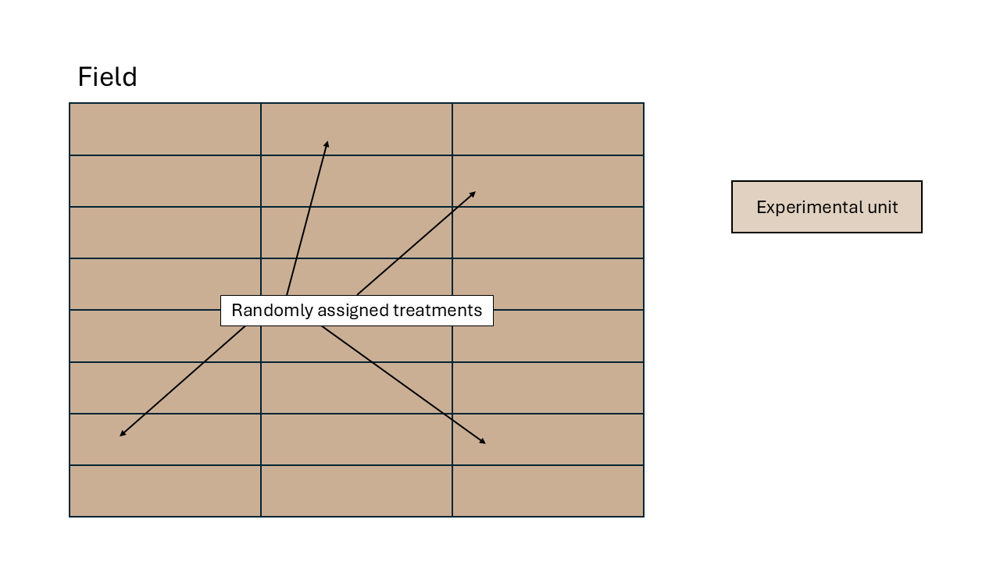
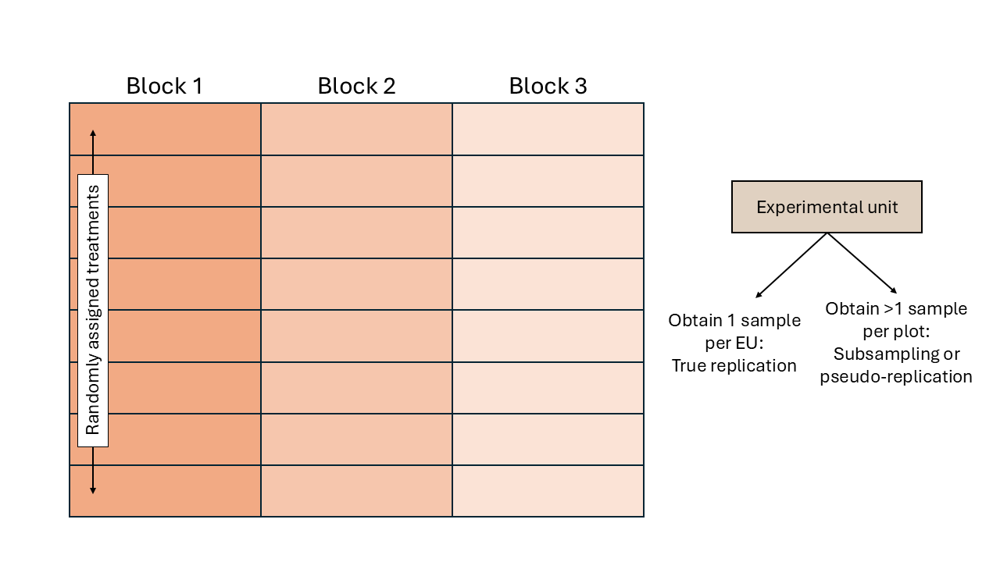
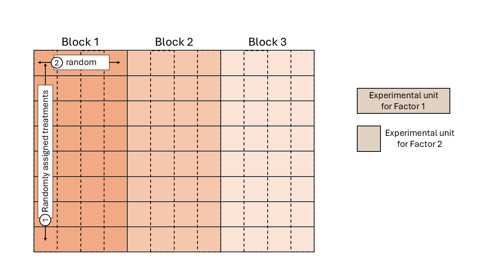

4 Día 2 (mañana): Conexión entre diseños experimentales y modelos estadísticos.
6 de octubre de 2026
4.2 Designed experiments
Golden Rules of designed experiments:
- Randomization
- Replication
- Local control
4.3 Describing a designed experiment
4.3.2 Design structure
Experimental unit versus observational unit
- Experimental unit (EU): smallest entity to which a treatment is independently assigned.
- Observational unit (OU): entity on which observations are made.
- If OU \[>\] EU, not all observations are independent.
- The variance estimated from pseudoreplications (subsamples) is usually smaller than the variance estimated from true replications (experimental units).
4.3.2.1 Completely Randomized Design (CRD)
We assume that all experimental units experienced similar conditions. In a field experiment setting, that means that all plots were located in an approximately homogeneous area. Observations are thus assumed independent to each other.

Statistical model the independent assumption seems reasonable, which is why we can keep the model where
\[y_{i} = \mu + \tau_i + \varepsilon_{i},\\ \varepsilon_{i} \sim N(0, \sigma^2).\]
Let’s expand the variance-covariance matrix:
\[\Sigma = \begin{bmatrix} \sigma^2 & 0 & 0 & 0 & \dots & 0 \\ 0 & \sigma^2 & 0 & 0 & \dots & 0 \\ 0 & 0 & \sigma^2 & 0 & \dots & 0 \\ 0 & 0 & 0 & \sigma^2 & \dots & 0 \\ \vdots & \vdots & \vdots & \vdots & \ddots & \vdots\\ 0 & 0 & 0 & 0 & \dots & \sigma^2 \end{bmatrix}.\]
Note that the elements in the off-diagonals are zeroes, because we are still keeping the assumption of independence (for now…).
4.3.2.2 Randomized complete block design (RCBD)
We assume that the experimental units did not experience similar conditions, but that an expert could determine groups of experimental units that did experience similar conditions. We call these groups of experimental units that experienced similar conditions “Blocks”. In a field experiment setting, that means that groups of plots were located in approximately homogeneous areas called blocks. In a study dealing with animals,this could be a repetition (i.e., a group of animals studied for the same timeframe). In a laboratory setting,this could be a day or a week where the scientists run the experiment.

All observations from the same block shared the same conditions and thus, shared a random effect for the intercept. Said common random effect for the intercept means that observations sharing a block are correlated. We can write out the statistical model
\[y_{ij} = \mu + \tau_i + u_j + \varepsilon_{ij},\\ u_{j} \sim N(0, \sigma^2_u), \\ \varepsilon_{ij} \sim N(0, \sigma^2),\]
where \(y_{ijk}\) is the observation for the \(i\)th treatment in the \(j\)th block, \(\mu\) is the overall mean, \(\tau_i\) is the effect of the \(i\)th treatment, \(u_k\) is the random effect of the \(k\)th block, and \(\varepsilon_{ij}\) is the residual.
Assuming observations 1 to 10 belong to:
| Block | Treatment | Response |
|---|---|---|
| 1 | H | 16.8 |
| 1 | C | 14.02 |
| 1 | A | 11.37 |
| 1 | G | 12.30 |
| 1 | D | 12.1 |
| 1 | E | 12.04 |
| 1 | F | 14.5 |
| 1 | B | 9.8 |
| 2 | E | 10.5 |
| 2 | F | 14.1 |
\[\Sigma = \begin{bmatrix} \sigma^2 + \sigma^2_u & \sigma^2_u & \sigma^2_u & \sigma^2_u & \sigma^2_u & \sigma^2_u & \sigma^2_u & \sigma^2_u & 0 & 0 & \dots & 0 \\ \sigma^2_u & \sigma^2 + \sigma^2_u & \sigma^2_u & \sigma^2_u & \sigma^2_u & \sigma^2_u & \sigma^2_u & \sigma^2_u & 0 & 0 & \dots & 0 \\ \sigma^2_u & \sigma^2_u & \sigma^2 + \sigma^2_u & \sigma^2_u & \sigma^2_u & \sigma^2_u & \sigma^2_u & \sigma^2_u & 0 & 0 & \dots & 0 \\ \sigma^2_u & \sigma^2_u & \sigma^2_u & \sigma^2 + \sigma^2_u & \sigma^2_u & \sigma^2_u & \sigma^2_u & \sigma^2_u & 0 & 0 & \dots & 0 \\ \sigma^2_u & \sigma^2_u & \sigma^2_u & \sigma^2_u & \sigma^2 + \sigma^2_u & \sigma^2_u & \sigma^2_u & \sigma^2_u & 0 & 0 & \dots & 0 \\ \sigma^2_u & \sigma^2_u & \sigma^2_u & \sigma^2_u & \sigma^2_u & \sigma^2 + \sigma^2_u & \sigma^2_u & \sigma^2_u & 0 & 0 & \dots & 0 \\ \sigma^2_u & \sigma^2_u & \sigma^2_u & \sigma^2_u & \sigma^2_u & \sigma^2_u & \sigma^2 + \sigma^2_u & \sigma^2_u & 0 & 0 & \dots & 0 \\ \sigma^2_u & \sigma^2_u & \sigma^2_u & \sigma^2_u & \sigma^2_u & \sigma^2_u & \sigma^2_u & \sigma^2 + \sigma^2_u & 0 & 0 & \dots & 0 \\ 0 & 0 & 0 & 0 & 0 & 0 & 0 & 0 & \sigma^2 + \sigma^2_u & \sigma^2_u & \dots & 0 \\ 0 & 0 & 0 & 0 & 0 & 0 & 0 & 0 & \sigma^2_u & \sigma^2 + \sigma^2_u & \dots & 0 \\ \vdots & \vdots & \vdots & \vdots & \vdots & \vdots & \vdots & \vdots & \vdots & \vdots & \ddots & \vdots\\ 0 & 0 & 0 & 0 & 0 & 0 & 0 & 0 & 0 & 0 & \dots & \sigma^2 + \sigma^2_u \end{bmatrix}.\]
4.3.2.3 Split-plot design
Split-plot designs are hierarchical types of designs with at least two treatment factors, where the experimental unit for one treatment contains multiple experimental units of another treatment factor. The reason for this type of designs often go back to practical limitations for the application of some treatment factor (e.g., agricultural machinery that imposes the experimental unit size), making split-plot designs more convenient.
Treatments are randomized in a stepwise fashion:
1. The levels of one treatment factor are randomly assigned to its
experimental units (whole plots). In an RCBD, the treatments for the whole plots
are randomly assigned within each block.
2. Within the whole plots, the levels of the other treatment factor are
randomly assigned to its experimental units (split plots), which are
subsections of the whole plots. Note: we could think of the whole plots acting
as “mini blocks” for the second treatment factor.

Again, all observations from the same block share the same random effect and are correlated.
Likewise, all observations from the same whole plot (\[\sim\]“mini block”) are correlated.
\[y_{ijk} = \mu + \tau_i + \alpha_j + (\tau \alpha)_{ij} + u_k + v_{i \vert k} + \varepsilon_{ij},\\ u_{k} \sim N(0, \sigma^2_u), \\ v_{i \vert k} \sim N(0, \sigma^2_v), \\ \varepsilon_{ijk} \sim N(0, \sigma^2),\]
where \(y_{ijk}\) is the observation for the \(i\)th level of treatment factor 1, \(j\)th level of treatment factor 2, in the \(k\)th block, \(\mu\) is the overall mean, \(\tau_i\) is the main effect of the \(i\)th level of treatment factor 1, \(\alpha_j\) is the main effect of the \(j\)th level of treatment factor 2, \((\tau \alpha)_{ij}\) is their interaction, \(u_k\) is the random effect of the \(k\)th block, \(v_{i \vert k}\) is the random effect of the \(i\)th “miniblock” (whole plot) in the \(k\)th block, and \(\varepsilon_{ij}\) is the residual.
Assuming observations 1 to 4 belong to:| Block | Treatment Factor 1 | Treatment Factor 2 | Response |
|---|---|---|---|
| 1 | H | a | 17.2 |
| 1 | H | c | 16.2 |
| 1 | H | b | 16.9 |
| 1 | H | d | 16.7 |
| 1 | C | d | 14.7 |
| 1 | C | c | 14.1 |
| 1 | C | b | 13.7 |
| 1 | C | a | 13.5 |
| 1 | A | c | 11.5 |
| 1 | A | d | 11.1 |
.$$